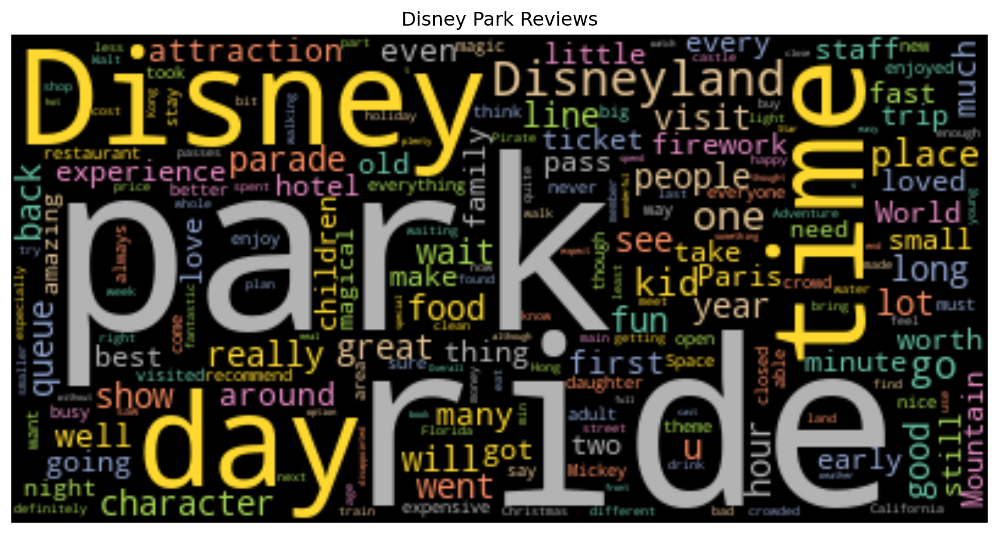
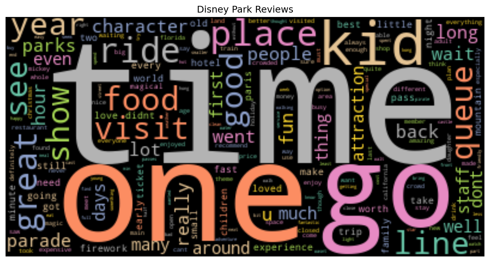
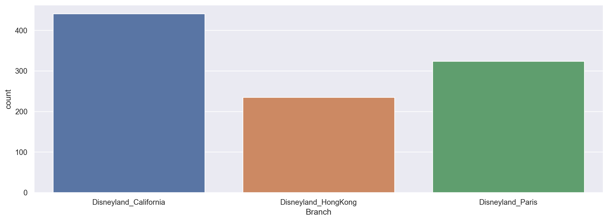
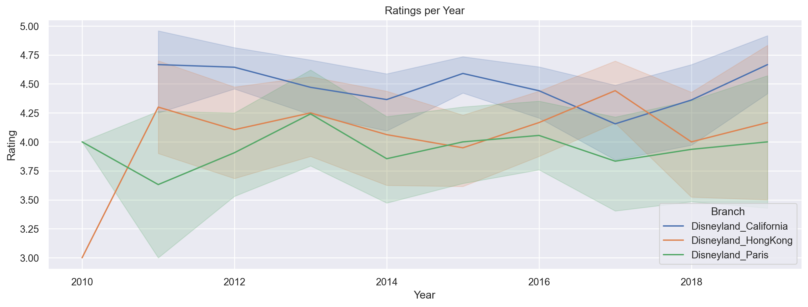
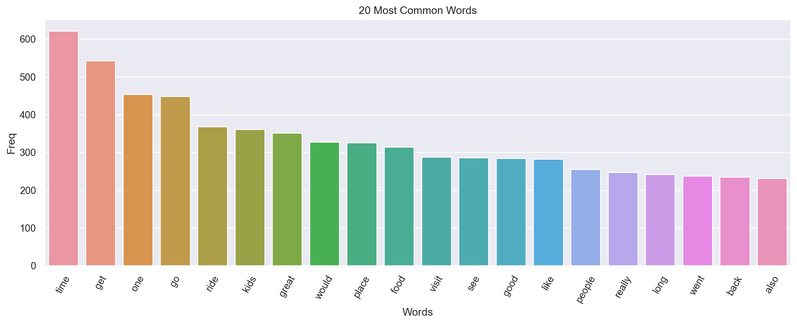
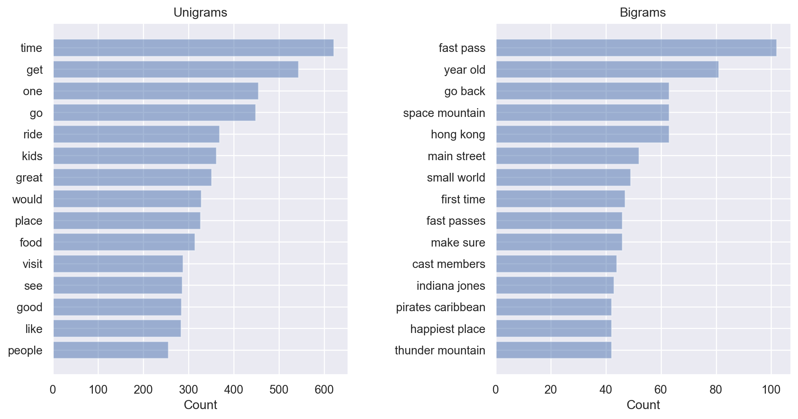

# General purpose
from collections import Counter
import numpy as np
import os
import warnings
warnings.filterwarnings(action = 'ignore')
# Data wrangling
import pandas as pd # similar to tidyverse
# visualization
import matplotlib.pyplot as plt
import seaborn as snsPython
General libraries
Text mining libraries
import nltk
import string
nltk.download("omw-1.4")
nltk.download('punkt')
nltk.download('stopwords')
nltk.download('wordnet')
from nltk.corpus import stopwords
from nltk.util import ngrams
from nltk.stem import WordNetLemmatizer
from nltk.tokenize import word_tokenize
from nltk.tokenize import WordPunctTokenizer
from wordcloud import WordCloud
from wordcloud import STOPWORDS
from textblob import TextBlob
from textblob import WordSetup
Load the data
# Import the data
df=pd.read_csv("workshop_data.csv", encoding='latin-1')Examine the data
df.head(n = 2)| Review_ID | Rating | Year_Month | Reviewer_Location | Review_Text | Branch | |
|---|---|---|---|---|---|---|
| 0 | 305683957 | 5 | 2015-08-01 | Portugal | I ve previously been to 3 Disney Resorts. So ... | Disneyland_California |
| 1 | 666364898 | 3 | 2018-10-01 | United States | The Hong Kong Disneyland is quite small, there... | Disneyland_HongKong |
Examine the data
df.info()<class 'pandas.core.frame.DataFrame'>
RangeIndex: 1000 entries, 0 to 999
Data columns (total 6 columns):
# Column Non-Null Count Dtype
--- ------ -------------- -----
0 Review_ID 1000 non-null int64
1 Rating 1000 non-null int64
2 Year_Month 1000 non-null object
3 Reviewer_Location 1000 non-null object
4 Review_Text 1000 non-null object
5 Branch 1000 non-null object
dtypes: int64(2), object(4)
memory usage: 47.0+ KBExamine a review
df.loc[:,'Review_Text'].values[10]"I went there with 2 daughters 1 y.o. and 4 y.o. Both of them were very excited. Little one liked most of the rides (the only one she didn't like was It's a little world . It was too long for her. Older one was super happy to see the real princesses :)"Preprocessing
Convert dates
df.Year_Month=df.Year_Month.apply(pd.to_datetime, errors ='coerce')
df['Month']=df.Year_Month.dt.month
df['Year']=df.Year_Month.dt.yearConvert to lowercase
# Convert to lowercase
df['Clean_Text'] = df['Review_Text'].apply(lambda x : ' '.join(x.lower() for x in x.split()))Remove punctuation
def remove_punctuations(text):
for char in string.punctuation:
text = text.replace(char, '')
return text
df['Clean_Text'] = df['Clean_Text'].apply(remove_punctuations)Remove Stop Words
# Import list of stop words
stop = stopwords.words('english')
# Create custom list of stop words
wc_removals = ['day', 'disney', 'disneyland', 'rides', 'park']
# Combine stop word lists
stop_extended = stop + wc_removals
df['Clean_Text'] = df['Clean_Text'].apply(lambda x : ' '.join(x for x in x.split() if x not in stop_extended))
df['Clean_Text'].head()0 previously 3 resorts expectations sky high ori...
1 hong kong quite small many people waiting line...
2 wife 15 year old son went june 30 2015 hot sun...
3 family unfortunate experience paris weekend 13...
4 hk small lines big attractions long enjoy took...
Name: Clean_Text, dtype: objectLemmatization
df['Clean_Text'] = df['Clean_Text'].apply(lambda x: ' '.join([Word(x).lemmatize()]))
df['Clean_Text'].head()0 previously 3 resorts expectations sky high ori...
1 hong kong quite small many people waiting line...
2 wife 15 year old son went june 30 2015 hot sun...
3 family unfortunate experience paris weekend 13...
4 hk small lines big attractions long enjoy took...
Name: Clean_Text, dtype: objectTokenization
df['Tokens'] = df['Clean_Text'].apply(lambda x: TextBlob(x).words)
df['Tokens'].head()0 [previously, 3, resorts, expectations, sky, hi...
1 [hong, kong, quite, small, many, people, waiti...
2 [wife, 15, year, old, son, went, june, 30, 201...
3 [family, unfortunate, experience, paris, weeke...
4 [hk, small, lines, big, attractions, long, enj...
Name: Tokens, dtype: objectFrequency
df['Frequency'] = df['Clean_Text'].apply(lambda x: len(str(x).split(' ')))
df['Frequency'].head()0 44
1 19
2 72
3 56
4 17
Name: Frequency, dtype: int64Visualization
Convert words to single text
all_review_text = ' '.join(i for i in df.Review_Text)
all_clean_text = ' '.join(i for i in df.Clean_Text)Word cloud (all words)
wordcloud = WordCloud(
colormap="Set2",
collocations=False).generate(all_review_text)
plt.figure(figsize=[11,11])
plt.imshow(wordcloud, interpolation="bilinear")
plt.axis("off")
plt.title("Disney Park Reviews")
plt.show()
Word cloud (less stop words)
wordcloud = WordCloud(
colormap="Set2",
collocations=False).generate(all_clean_text)
plt.figure(figsize=[11,11])
plt.imshow(wordcloud, interpolation="bilinear")
plt.axis("off")
plt.title("Disney Park Reviews")
plt.show()
Reviews by park
sns.set(rc = {'figure.figsize':(15, 5)})
sns.countplot(x=df["Branch"])<Axes: xlabel='Branch', ylabel='count'>
Ratings by year
sns.lineplot(data=df, x="Year", y="Rating", hue="Branch").set(title="Ratings per Year");
Most common words (less stop words)
most_common = Counter(' '.join(df['Clean_Text']).split()).most_common(20)
most_common_df = pd.DataFrame(most_common, columns = ['Words', 'Freq'])
sns.barplot(data = most_common_df, x = 'Words', y = 'Freq')
plt.title('20 Most Common Words')
plt.xticks(rotation = 60)
plt.show()
N-Grams
plotNgrams(df['Clean_Text'])
Bigrams
bigrams = ngrams(word_tokenize(df['Clean_Text'].sum()), 2)
bigrams_freq = Counter(bigrams)
bigrams_freq.most_common(10)[(('fast', 'pass'), 101),
(('year', 'old'), 81),
(('space', 'mountain'), 62),
(('hong', 'kong'), 54),
(('main', 'street'), 50),
(('small', 'world'), 49),
(('go', 'back'), 47),
(('fast', 'passes'), 46),
(('make', 'sure'), 46),
(('cast', 'members'), 44)]Trigrams
trigrams = ngrams(word_tokenize(df['Clean_Text'].sum()), 3)
trigrams_freq = Counter(trigrams)
trigrams_freq.most_common(10)[(('happiest', 'place', 'earth'), 25),
(('big', 'thunder', 'mountain'), 19),
(('use', 'fast', 'pass'), 14),
(('fast', 'pass', 'system'), 13),
(('cant', 'wait', 'go'), 10),
(('get', 'fast', 'pass'), 10),
(('make', 'sure', 'get'), 10),
(('year', 'old', 'daughter'), 10),
(('2', 'year', 'old'), 9),
(('8', 'year', 'old'), 9)]